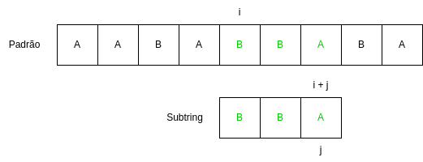
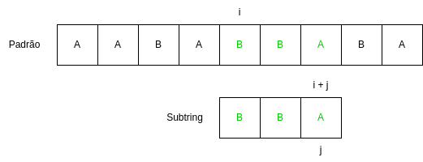
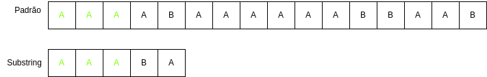
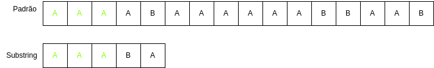

Algoritimo Knuth-Morris-Pratt
O Problema da Busca por Padrões Textuais
Em um mundo ditado por grandes volumes de dados, a capacidade de encontrar informações em grandes textos de forma rápida e acurada se torna uma habilidade algorítmica cada vez mais necessária, seja para resolver problemas da computação ou para lidar com desafios relacionados à biotecnologia e à segurança da informação.
Esse tipo de abordagem pode abranger desde problemas muito comuns — como contar o número de vezes que determinado termo aparece em um texto — até desafios mais complexos, como encontrar características únicas dentro de uma sequência de DNA.
À primeira vista, esse problema pode parecer trivial, especialmente quando pensamos em contextos simples e cotidianos. No entanto, recentemente, a busca por padrões foi aplicada em um feito antes inimaginável: a recriação dos lobos terríveis, realizada pela empresa Colossal Biosciences, por meio de uma tecnologia de bioengenharia avançada chamada CRISPR.

O método utilizado consistiu em edição genômica — ou seja, a identificação de fragmentos específicos na cadeia de DNA de uma espécie e a alteração de determinadas bases por outras possíveis, como substituir um “A” por um “T” ou um “C” por um “G”.No caso dos lobos terríveis, o DNA de lobos comuns foi modificado com base em informações obtidas de um fóssil preservado. Com apenas 14 alterações em 20 genes, os cientistas conseguiram reconstruir uma sequência genética idêntica à da espécie extinta.
Solucionando o problema: Os Algoritimos de Knuth-Morris-Pratt e o algoritimo ingênuo
Para encontrar essas sequências específicas no DNA, é necessário utilizar algoritmos de busca por padrões. O mais simples deles é o algoritmo ingênuo, que compara o padrão desejado com cada parte do texto (ou DNA), letra por letra, até encontrar uma correspondência. Já o algoritmo Knuth-Morris-Pratt (KMP) melhora esse processo ao evitar comparações repetidas, usando informações do próprio padrão para avançar mais rapidamente no texto. Enquanto o método ingênuo pode ser lento em casos grandes, o KMP é muito mais eficiente, especialmente quando lidamos com sequências longas e repetitivas — como ocorre em genomas.
Dessa forma, precisamos entender o princípio por trás desses algoritimos para solucionarmos o problema,e, por isso, começaremos com a força bruta do algoritimo ingênuo.
Aprofundando no Algoritimo ingênuo
Antes de estudarmos o algoritmo KMP, vamos entender como funciona o principio de análise de padrões de strings utilizando o algoritmo ingênuo e como o algoritmo KMP resolve o principal problema dele.
Assim como o KMP, o algoritimo ingênuo também é utilizado para procurar padroẽs em strings. Neste caso, o algoritimo ingênuo realiza esta busca utilizando uma método de “brute force”, ou seja, ele testa todas as combinações possiveis para encontrar padrões.
Exercício
Com o contexto de como o algoritimo funciona, pense quais argumentos o algoritmo ingênuo deve receber para seu funcionemento:
algoritimo_ingenuo(???){...}.Gabarito
Como você deve ter imaginado, ele não precisa receber muitas coisas, apenas as 2 strings e seus tamanhos:
algoritimo_ingênuo(char string[], char substring[], int n, int m){...}
Agora vamos desenvolver mais este código e tentar montar a estrutura do loop principal do algoritimo:
void algoritimo_ingenuo(char string[], char substring[], int n, int m){
for(int i = 0; i < n - m; i++){
// loop para percorrer a string
}
}
Exercício
Completando um pouco mais o código, chegamos dentro do loop de comparação das strings:
void algoritimo_ingenuo(char string[], char substring[], int n, int m){ for(int i = 0; i < n - m; i++){ for (int j = 0; j < m; j++) { //loop de comparação } } }Usando o código fornecido, tente desenvolver o conteúdo deste loop para que ele continue realizando as comparações de caractéres das strings enquanto elas estiverem iguais.
Gabarito
void algoritimo_ingenuo(char string[], char substring[], int n, int m){ for (int i = 0; i <= n - m; i++) { for (int j = 0; j < m; j++) { if (string[i + j] != substring[j]){ break; } } } }
Com a comparação de caractéres feita dentro do loop, apenas precisamos complemetar o codigo para que ele nos devolva os indices onde o padrão foi encontrado:
void algoritimo_ingenuo(char string[], char substring[], int n, int m){
for (int i = 0; i <= n - m; i++) {
for (int j = 0; j < m; j++) {
if (string[i + j] != substring[j]){
break;
}
if (j == m - 1) {
printf("Padrão encontrado na posição %d\n", i);
}
}
}
}
Vamos ver uma simples demonstração de como ele funciona por meio da animação:


 



Exercício
Agora que estamos familiarizados com o funcionamento deste algoritimo, tente estimar qual vai ser a complexidade dele no seu pior caso.
Gabarito
Como o algoritmo ingênuo compara cada posição da string principal, e em cada posição tenta casar a substring. Se a string principal tem tamanho n e a substring tem tamanho m, a complexidade no pior caso é (O(nm) ).
Agora vamos tentar com uma string e substring maiores:

 



Como pode ser visto nas animações, existe um problema bem aparente neste algoritimo, a sua redundância nas comparações. Quando uma incompatibilidade (mismatch) ocorre, o algoritmo simplesmente avança para a próxima posição na string principal e reinicia a comparação da substring do início, revisitando caracteres que já foram analisados.
Por exemplo, se uma parte da substring já foi confirmada como compatível, o algoritmo ingênuo não aproveita essa informação, resultando em comparações desnecessárias. Essa abordagem leva a uma complexidade de (O(nm)) no pior caso, tornando-o inviável para strings longas.
O KMP
Bom, já ficou bem claro que o problema do Ingênuo é que ele demora porque sempre precisa ficar voltando quando da mismatch dentro da mesma string. É exatamente nesse ponto em que o KMP entra: como podemos fazer o algoritmo não ficar voltando quando não precisa? (dica: a resposta é bem simples)
Exercicio
Como podemos fazer o algoritmo não perder progresso?
Gabarito
Pulando caracteres quando ele sabe que eles não vão dar match.
Para ficar um pouco mais fácil de visualizar esse defeito:


Agora ficou bem claro qual é a primeira etapa do KMP: pular “casas” quando ele sabe que não vai ocorrer match. Mas quais casam são essas?
De modo simples: ele pula para casas que sabe que ainda podem dar match, ignorando as que já foram testadas e não funcionam. Explicando melhor, o código procura por um prefixo na substring que também seja um sufixo na string. Isso significa que, ao encontrar um caractere que não combina, o algoritmo pode usar o conhecimento prévio sobre a substring para avançar mais rapidamente.
Lembrando rapidamente o que são prefixos e sufixos:
- Prefixo: uma sequência de caracteres que aparece no início de uma string.
- Sufixo: uma sequência de caracteres que aparece no final de uma string.
Por exemplo, a palavra “paragrafo” tem como prefixo “para” e como sufixo “grafo”. O KMP utiliza essa relação para otimizar a busca, evitando comparações desnecessárias.
Para melhor visualizar isso:

Dessa forma, fica mais claro como o KMP funciona: ele tenta casar a substring com a string, e quando ocorre uma incompatibilidade, ele não volta para o início da substring. Em vez disso, ele utiliza o conhecimento prévio sobre os prefixos e sufixos para avançar mais rapidamente.
Mas como ele faz isso? A resposta está no vetor LPS (Longest Prefix Suffix), que armazena o comprimento do maior prefixo que também é sufixo para cada posição da substring. Esse vetor é fundamental para otimizar o algoritmo KMP, permitindo que ele avance de forma eficiente sem retroceder desnecessariamente.
Retirando a Redundância: O Vetor de LPS
O vetor Longest Proper Prefix which is also Suffix (LPS) serve é o Coração do algoritimo KMP. A Abordagem que ele adota de indentificar o padrão é, como o nome já sugere, entender até que ponto do comprimento o prefixo é igual ao sufixo de uma string. Essa padronização é utilizada para direcionar a eficiência do algoritimo que, ao invés de retroceder, agora, só volta até a parte onde ainda não temos padrões. Mas como eu vou entender padrões comparando prefixos com sufixos? É aí que a mágica vem…
Exercício
Suponhas as seguintes sequências de caracteres
1.ABCABCABCABC
2.ABABACABABACABABA
3.ABCABDABCABEABCABDABCABEABCABD
Qual o Padrão textual presente em cada uma delas?
Gabarito
1.ABC - Note que aqui a sequência é simples, só temos que ver quando o caractere A se repete novamente
2.ABABA - Aqui, já vemos um grau de ruptura, com a letra “c” entre alguns padrões
3.ABCABDABCABE - Já temos padrões grandes e difíceis de se indentificar visualmente, com grandes quebras claras
Quando tentamos encontrar padrões em uma sequência, o nosso pensamento segue três etapas naturais. Primeiro, reconhecemos pequenas repetições locais, comparando trechos que já vimos com o que estamos lendo agora. Depois, procuramos uma regularidade, tentando identificar se essas repetições seguem um tamanho ou ritmo constante. Por fim, condensamos essas repetições em uma ideia única para economizar esforço, enxergando, por exemplo, “ABC” repetido, em vez de cada letra separada. Esse raciocínio leva naturalmente a buscar partes do início (prefixos) que também aparecem no final (sufixos), pois eles já foram confirmados e podem ser reutilizados.Logo, o LPS sintetiza esse raciocínio em uma lógica intuitiva.
void lps(char padrao[], int m, int* lps){
inicie o comprimento do maior prefixo próprio e sufixo em 0, ou seja, aqui você está olhando para o maior padrão
defina lps[0] como 0, porque um único caractere não tem prefixo nem sufixo
inicie o contador i em 1
enquanto i for menor que m, continue o processamento {
se padrao[i] for igual a padrao[comprimento] {
incremente o comprimento
atribua lps[i] como o novo comprimento
avance i
}
caso contrário {
se comprimento for diferente de 0 {
atualize o comprimento para o valor de lps[comprimento - 1]
não avance i ainda, pois vamos tentar casar um prefixo menor
}
se comprimento for igual a 0 {
defina lps[i] como 0
avance i
}
}
}
}
Exercício
A partir dessa descricao de alto nivel do LPS, tente escrever como seu codigo em C ficaria
void lps(char padrao[], int m, int* lps){ ... }Gabarito
void lps(char padrao[], int m, int lps[]){ // Passo 1: Inicializa comprimento como 0 e o primeiro caractere do vetor também, já que ele nao tem prefixo e nem sufixo int comprimento = 0; lps[0] = 0; // Passo 3: Começa a análise do segundo caractere int i = 1; // Passo 4: Percorre o padrão até o final while (i < m) { // Passo 5: Se os caracteres combinam, atualiza comprimento e LPS if (padrao[i] == padrao[comprimento]) { comprimento++; lps[i] = comprimento; i++; } // Passo 6: Se os caracteres não combinam else { if (comprimento != 0) { comprimento = lps[comprimento - 1]; } else { lps[i] = 0; i++; } } } }
Otimizando o KMP
Utilizando o LPS como uma função auxiliar para o KMP, podemos otimizar ele muito, de maneira a reduzir a redundância ao extremo. Vamos olhar como fica o código do KMP agora:
void kmp(char string[], char substring[], int n, int m) {
int lps[m];
lps(substring, m, lps);
int i = 0;
int j = 0;
while (i < n) {
if (string[i] == substring[j]) {
i++;
j++;
}
if (j == m) {
printf("Padrão encontrado na posição %d\n", i - j);
j = lps[j - 1];
} else if (i < n && string[i] != substring[j]) {
if (j != 0) {
j = lps[j - 1];
} else {
i++;
}
}
}
}
Exercício
A partir do código fornecido, tente estimar a nova complexidade do algoritmo KMP.
Gabarito
Agora que estamos usando o lps, o KMP alcança uma complexidade de (O(n + m)). Isso ocorre porque a construção do vetor LPS, que pré-processa o padrão, é realizada em (O(m)), e a busca na string principal é feita em (O(n)), sem retrocessos desnecessários.
Vamos olhar agora para uma animação, demonstrando o funcionamento desta versão do KMP: